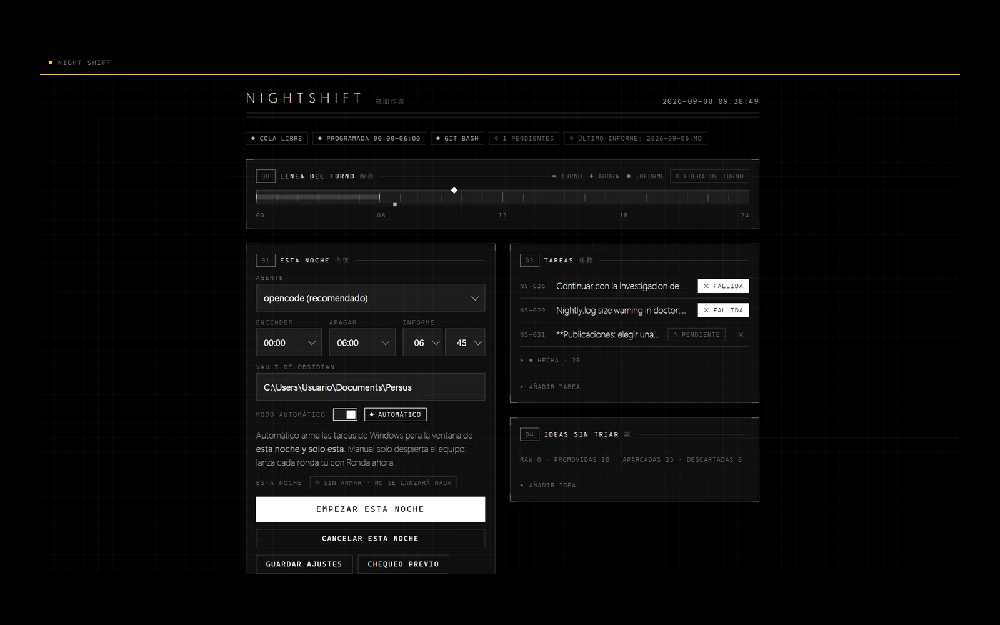

NightShift
NightShift exists to make the laptop work while I sleep. It is not a chatbot with a cron entry: it is a real state machine where the model never decides the state. A round ends only when the agent deletes the handoff file by calling complete — never because a model announces it is done. That one rule is the whole design, and everything else is built to keep it true.
A night runs like this. Task Scheduler fires every hour from 00:00 to 06:00. Each round first wipes every API key from the environment, leaving only the subscription login, then calls queue.py claim, which writes current.json and a lock. A headless driver takes over the coding agent's terminal UI over a pseudo-terminal, types the prompt, and waits for current.json to disappear — that absence is the end signal, not any string the agent prints. A reaper always runs afterwards and either re-queues the task or marks it failed.
There are three modes, tried in order: execute when a project is pending, curate when there are raw ideas to score and promote, ideate when there is nothing left and it has to generate its own. The round is sized to the real session budget — the driver reads the countdown line from the agent's UI and cuts the run short, reserving a few minutes at the end for the agent to write its log and call complete. Before that fix it believed it had forty minutes that did not exist.
Over about six weeks the queue went from four projects done to twenty-seven, and then the machine ran out of things to do. Most of that was hardening its own harness: a pre-flight doctor.py, log rotation, a watchdog for inactivity, per-round transcripts kept whole instead of one file overwritten each night. Some of it was work on other projects entirely — it cleaned up my assistant's codebase, extended my job scraper to fifty-six sources across two jobs, and prepared an arXiv submission checklist and a model-release watch for my World Models paper. One job, continuing a cryptanalysis project, it tried and failed.
The honest state today: the queue is empty and the ideation mode — the only one that can refill it without me — crashes on start, so for now the machine depends on being fed by hand. The silent hang that once burned a whole night is gone, because there is no longer a single truncated transcript that each round overwrites; when something breaks now, there is evidence. The repository has been under git since the first night it went to production.
Services
Automation, Agent Infrastructure
Stack
Python, Windows Task Scheduler, ConPTY, Telegram Bot API
Status
In production since Aug 2026 · 27 shipped
Year
2026
